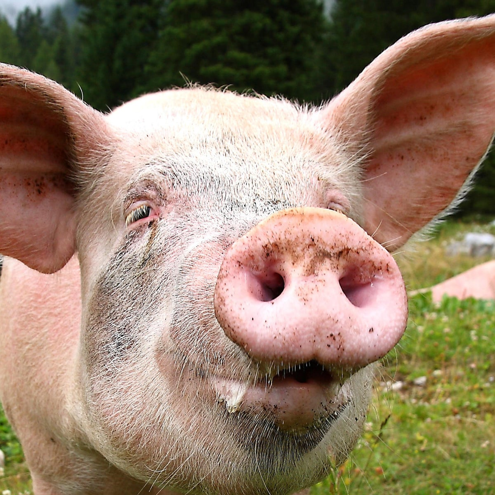
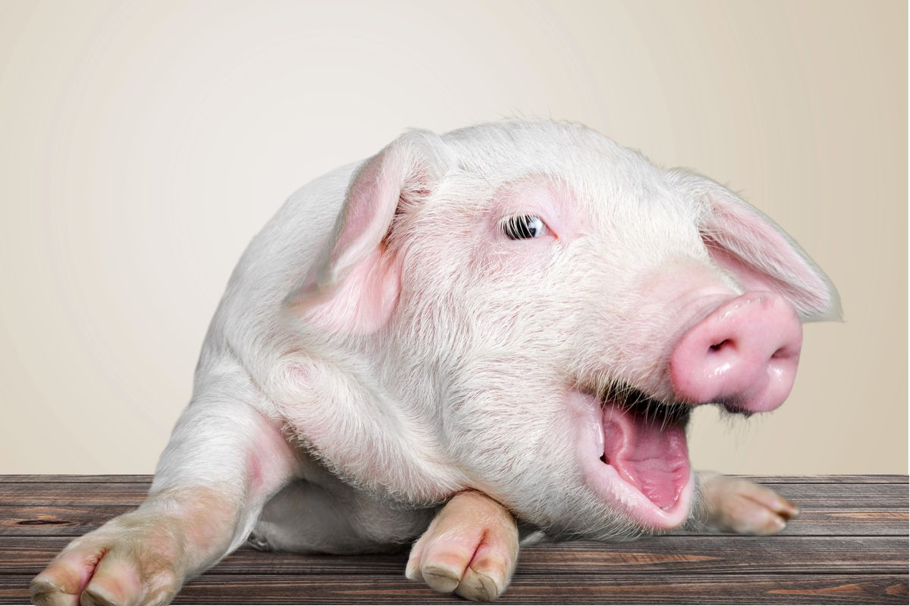
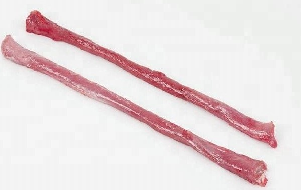
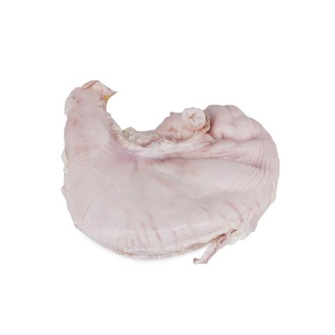
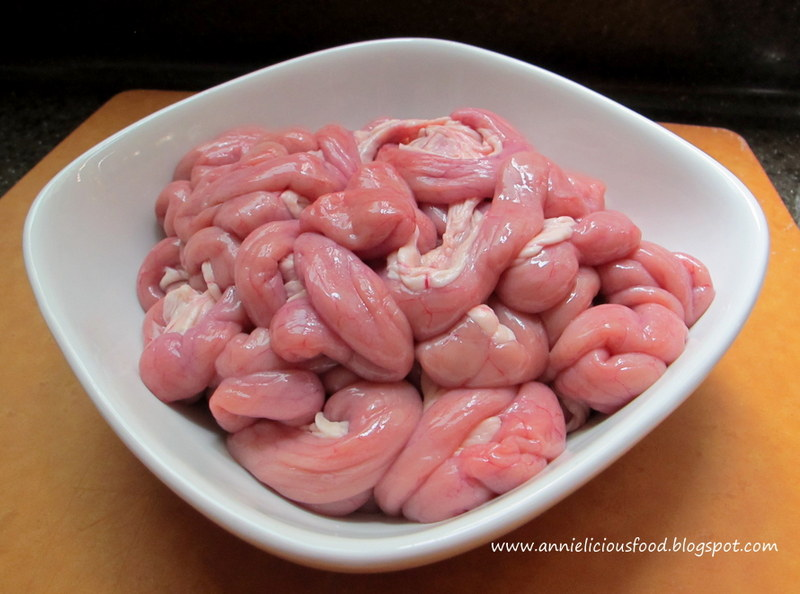
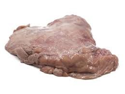
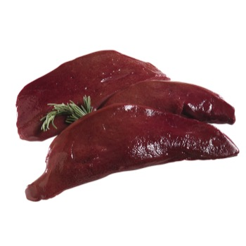
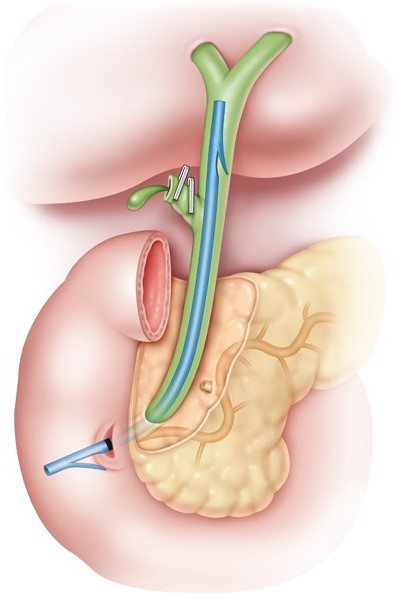

Mongastric Digestive System - Pigs
Mouth
The food first enters the pig’s digestive system through the mouth. The food gets broken down into smaller pieces using their teeth. Saliva is also used to chemically break down the food. All of this is to prepare the food for when it travels into the stomach.

Esophagus
Once the mouth has finished, the food is passed down to the stomach through the esophagus. This is done through a wavelike motion of muscles, expanding and contracting to move the food to the stomach. This is called peristalsis.

Stomach
The stomach is responsible for breaking down the food into its usable components, like nutrients, protein and sugars. This is done by using stomach acids. Gastric glands release an acid called hydrochloric, which has a low pH of just about 2. This pH allows for the stomach to double up and also kill off any bacteria that may be on the food.

Small Intestine
When the food has become a smooth paste, the food is handed to the food intestine to absorb
the nutrients and separate it from the waste products.

Pancreas
The pancreas is responsible for producing the enzymes needed for disgestion. When food enters the stomach, it is alerted so it can begin producing and sending the nesseary enzymes to the stomach.

Liver
The liver produces bile which is also important for digestion. It is also responsible for a lot of other things like removing toxins from the body.

Gall Bladder
The gallbladder is where bile is stored. When food enters the body, the gallbladder sends bile away to break down fats in the food.

Cecum
The cecum is needed to digest fibrous food, which is common in a pig’s diet. The cecum is also found in the human body, but human body does not need it due to the fact there is no bacteria there to break down food unlike the pigs cecum.

large Intestine
The large intestine is responsible for removing the remaining water left over from the digestive process.
Anus
This is where waste is removed from the digestive system and out into the nearby environment.